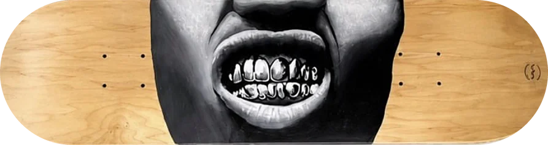
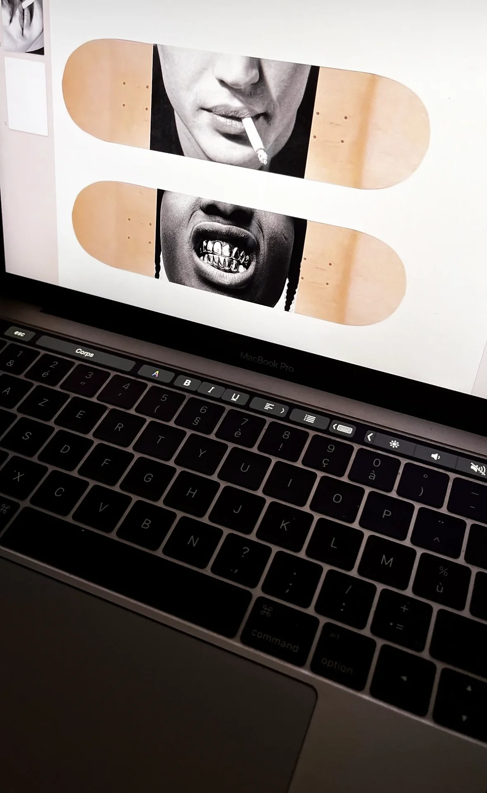

SVR ART — contemporary artist, France
Contemporary artist — France
Faces the street already knows.
Portraits in black and white — on raw wood, canvas and old sheet music.
Enter the gallery

01Work
A private view.
Five works, two series — portraits painted over old sheet music, and the Paint-Boards. Select a work to see it on its own.
01 / 05
Portrait on sheet music
Old scores, collaged, then painted over. The music stays under the skin.

02Studio
From the screen to the wood.
The compositions start on the computer — photographs laid onto the shape of a deck. Then everything is painted by hand, in black and white, on the raw wood.

Black walls. Focused light. Faces at monumental scale.
Exhibition view — 2025
03Contact
Commissions, exhibitions,
collaborations.